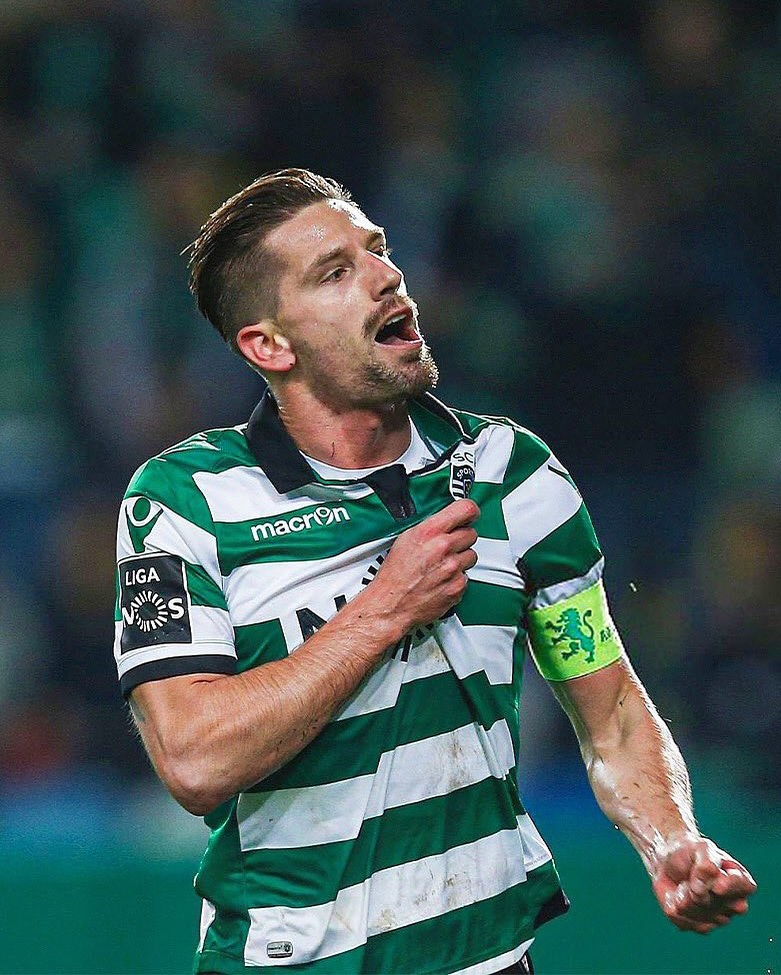
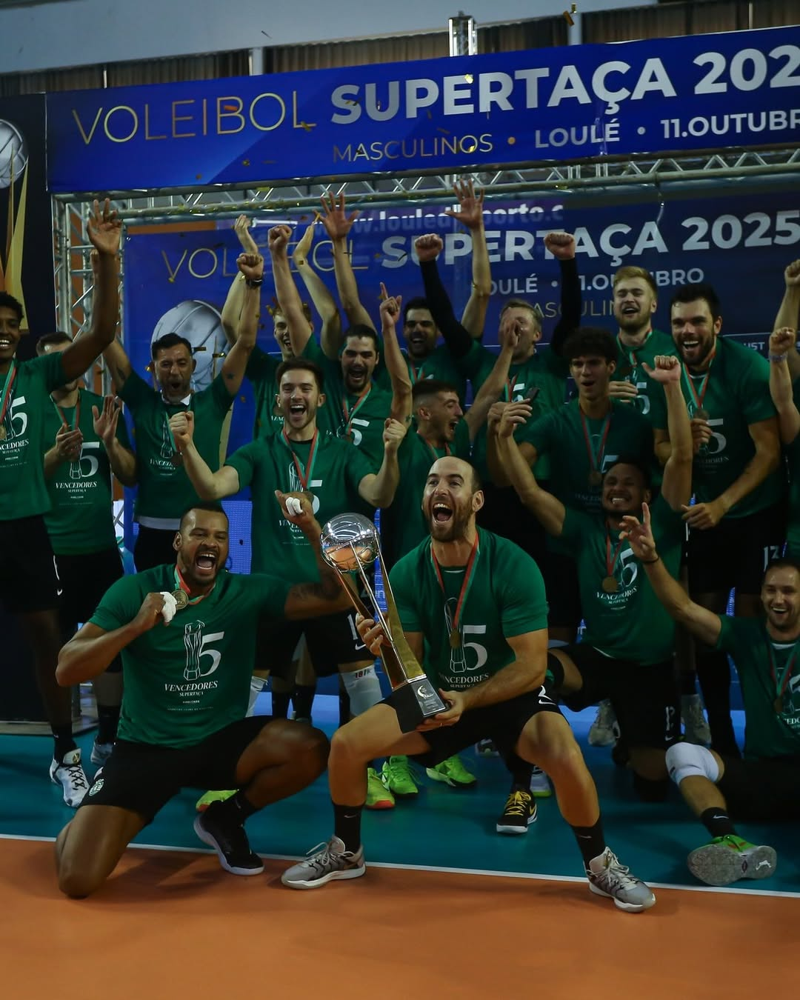
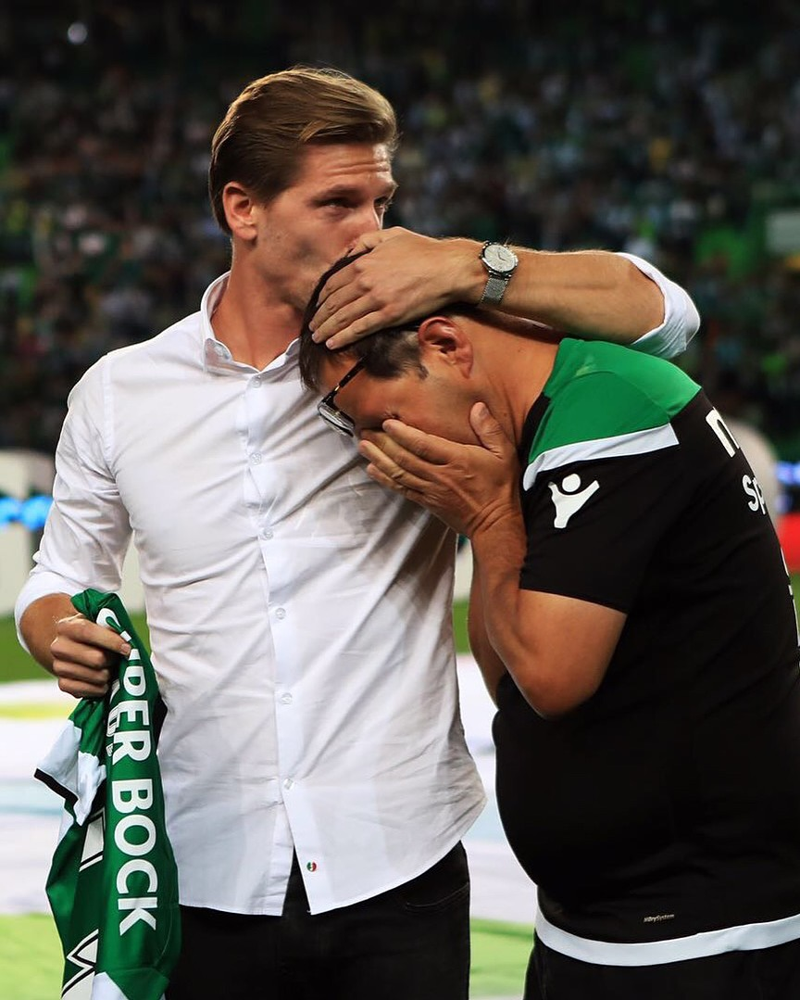

Nossos Jogadores
Conheça os atletas talentosos que representam o Glocklins FC, com dedicação e habilidade inigualáveis no campo.
História do Clube
Fundado em 2007, o Glocklins FC cresceu de uma equipe local para um símbolo de excelência, com vitórias memoráveis e fãs apaixonados.
Últimas Notícias
Fique atualizado com as conquistas recentes, como nossa vitória no torneio regional e os próximos jogos emocionantes.
